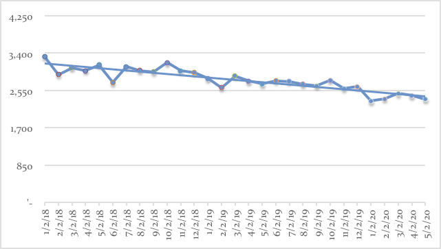

(Photo by John Moore/Getty Images)
(Photo by John Moore/Getty Images)
El crimen en la Ciudad de México: Se reducen los delitos, pero aumenta la violencia
Recientemente se ha comentado de manera amplia el incremento en la inseguridad en la Ciudad de México. A partir de historias de crimen vividas en carne propia, una serie de columnistas y medios de información han hablado de un alza en la criminalidad. Sin embargo, el gobierno de la Ciudad sostiene que el crimen ha disminuido y que las historias son casos aislados.
En la Encuesta Nacional de Victimización y Percepción sobre Seguridad Pública que acaba de ser publicada, el INEGI presenta un cuadro de deterioro en la percepción de inseguridad. En esta, la Ciudad de México ocupa la sexta posición de 32 ciudades: con un 76.4% de la población que se siente insegura en su municipio comparada con el 61.8% en 2013.
La contraposición entre la percepción ciudadana y la posición del gobierno obliga a preguntar ¿qué está ocurriendo realmente en la Ciudad de México? El análisis, resultado de un esfuerzo por dar respuesta a esta cuestión, nos permitió concluir que aun cuando los delitos estén disminuyendo, la CDMX ha sufrido un proceso de violentización. Además, el crimen se ha reubicado en zonas más visibles que antes presentaban tasas delictivas muy por debajo del promedio de la ciudad. El ambiente de inseguridad que lleva viviéndose desde hace años en todo el país ya es parte de la vida de un sector de la sociedad capitalina que siempre sintió esto como un fenómeno ajeno.
Se reducen los delitos
 (Photo by Susana Gonzalez/Getty Images)
(Photo by Susana Gonzalez/Getty Images)
Si analizamos los delitos de alto impacto definidos por el SESNSP, tales como homicidios dolosos, secuestros, extorsiones y robos de alto impacto social del fuero común con y sin violencia (robos a casa habitación, a negocio, a transeúntes, a transportistas, de vehículos y a instituciones bancarias), vemos que estos han bajado en un 5% año con año, ubicando a la Ciudad de México como la decimocuarta entidad con mejor desempeño en disminución del crimen.
 Evolución de los crímenes de alto impacto de acuerdo al SESNSP
Evolución de los crímenes de alto impacto de acuerdo al SESNSP
Según los datos presentados en respuesta a la solicitud de información 0109000275416, publicada el 28 de junio de 2016 que se encuentra disponible en hoyodelcrimen.com, la disminución en los crímenes totales de alto impacto en la Ciudad de México es aun mayor.
La suma de todos los delitos reportados por la SSPDF muestra una tendencia a la baja. Entre enero de 2014 y mayo de 2016, los delitos mensuales bajaron de 3 mil 313 a 2 mil 345; pasando de un promedio mensual en 2014 de 3 mil 026 delitos al mes a 2 mil 718 en 2015 y 2 mil 381 en 2016; una disminución año con año de 11%.
 Crímenes totales registrados en CDMXEs importante señalar que los datos publicados por las dos fuentes no son consistentes. Aunque ambos presentan la misma tendencia a la baja, en varios casos se encuentran discrepancias para los mismos registros. Dado el nivel de granularidad (es decir, el nivel de detalle) proporcionado por la SSPDF como respuesta a la petición de información mencionada, el resto del análisis se realizó utilizando estos datos.
Si el crimen ha disminuido, ¿por qué los ciudadanos perciben que ha aumentado? Nuestra primera conclusión es que la CDMX se ha vuelto un lugar mucho más violento en los últimos dos años como resultado del incremento dramático en el número de homicidios dolosos y la violentización de los crímenes habituales.
Suben los homicidios
 (Photo by John Moore/Getty Images)
(Photo by John Moore/Getty Images)
El homicidio doloso es el delito qué más impacta sobre la percepción de inseguridad. De enero de 2014 a mayo de 2016, estos han incrementado de manera significativa en la CDMX como se puede apreciar en la siguiente gráfica.
Homicidios dolosos por mesLos homicidios dolosos en CDMX aumentaron de 71 en enero de 2014 a 110 en mayo de 2016. El principal crecimiento en homicidios se dio entre 2014 y 2015 y en lo que va del 2016 se ha mantenido en niveles similares a los del años pasado. Durante todo el 2014, se presentaron 901 casos de homicidio en la CDMX — un promedio de 75 al mes — ; en 2015 fueron mil 267 — un promedio de 106 al mes — ; y de enero a mayo 2016 se han presentado 524 homicidios — un promedio de 105 al mes. Esto representa un crecimiento de 18% año con año en los homicidios promedio por mes.
En 13 de las 16 delegaciones de la CDMX, los homicidios en 2015 aumentaron respecto a 2014. Sin embargo, este incremento se concentra de manera desproporcionada en la Cuauhtémoc y la Benito Juárez. En estas dos delegaciones, en las que habita sólo el 11% de la población de la CDMX, se concentró el 44% de los homicidios incrementales entre 2014 y 2015.
Relación de proporción de homicidios incrementales con poblaciónLa gráfica anterior presenta la relación que existe entre la cuota de aumento entre 2014 y 2015 en términos porcentuales y el porcentaje de población en cada Delegación. La intención de mostrar esta relación es identificar de manera visual las delegaciones que están “sobrerrepresentadas” en términos del incremento en homicidios en el periodo seleccionado. El punto a la extrema derecha, correspondiente a la delegación Cuauhtémoc, es el más notable ya que representa 35% del aumento en homicidios, es decir 127 sobre el total de 366 cometidos en la ciudad, mientras que concentra únicamente el 6% de la población de la CDMX. Por su parte, los puntos correspondientes a las Delegaciones Benito Juárez y Venustiano Carranza tienen el 9% y 8% de los homicidios incrementales respectivamente, mientras que sus poblaciones son el 4% y 5% del total de la CDMX.
En este periodo, la tasa de homicidios por 100 mil habitantes subió de manera agregada en la CDMX en un 41% pasando de 10.15 a 14.31. Las delegaciones donde más incremento fueron:
- Benito Juárez (150%) de 5.53 a 13.84
- Cuauhtémoc (139%) 17.2 a 41.04
- Milpa Alta (172%) de 5.13 a 11.69
- Tlalpan (69%) de 6.89 a 11.68
El crimen se hace mas violento
Otra evidencia de la violentización del crimen en CDMX es la nueva dinámica de robo en los medios de transporte. Por ejemplo, en el STC Metro los robos totales se han mantenido estables respecto a su frecuencia.
Robo total a borde de metro de 2014 a 2016Sin embargo, la tendencia es la misma que en la totalidad del crimen en CDMX: el robo en el Metro se ha vuelto significativamente más violento. Anteriormente, tres cuartas partes de los robos eran reportados como sin violencia, hoy en día más de la mitad son reportados como violentos.
Proporción de robo violento en el MetroEn enero de 2014, del total de robos realizados en el Metro, el 74% fueron sin violencia y sólo el 26% fueron violentos. Para mayo de 2016, el 55% de los robos presentaron violencia y sólo el 45% no.
El crimen se traslada a zonas que antes eran seguras
 (Photo by Miguel Tovar/LatinContent/Getty Images)
(Photo by Miguel Tovar/LatinContent/Getty Images)
A partir de los resultados obtenidos anteriormente y del hallazgo del incremento de homicidios, analizamos a detalle donde están sucediendo los homicidios en la Ciudad de México. Para esto, analizamos las tendencia y niveles absolutos a nivel sector tales como son definidos por la Secretaría de Seguridad Pública del Distrito Federal. Esto nos permitió identificar que los sectores que presentan el mayor crecimiento en la tasa de homicidios son, en su gran mayoría, aquellos que previamente eran relativamente seguros y que se encuentran principalmente en la Cuauhtémoc y la Benito Juárez.
Relación de tasa de homicidios por 100 mil habitantes con incremento en tas a de 2014 a últimos tasa junio 2015 a mayo 2016Este gráfica presenta todos los sectores de la CDMX y permite apreciar el aumento de homicidios entre 14 y 15 contra la tasa de homicidios por cien mil habitantes en 2014.
La pendiente descendiente (se utilizó una regresión logarítmica) de la curva nos permite apreciar como los sectores que han sufrido un incremento más elevado, son aquellos que estaban por debajo del promedio en 2014. Estos son los 12 sectores que presentaron el mayor incremento entre 2014 y 2015:
Los sectores rojizos son aquellos donde más se incrementó el número de homicidios promedio al mesComo se puede observar en la tabla y en el mapa, el incremento se ha concentrado en sectores del centro de la Ciudad de México. Los cuatro sectores que presentan mayor crecimiento son:
- Revolución — Alameda
- Del Valle
- Roma (cabe señalar que de enero 2016 a mayo 2016 no se han presentado casos de homicidios en este sector)
- Narvarte — Álamos
Estos cuatro sectores se encuentran en las Delegaciones Benito Juárez o Cuauhtémoc y, al estar ubicados en la zona centro de la Ciudad, concentran gran parte de la actividad económica y comercial. Además, estos sectores son altamente visibles y significativos para la vida en la Ciudad de México lo cual tiene aún mayor efecto sobre la percepción de inseguridad de la ciudadanía. Los sectores Revolución Alameda y Corredor Centro concentran más del 25% de puntos de interés y museos en CDMX.
En conclusión...
El incremento en los homicidios y la violentización del robo hacen que la ciudadanía viva en un ambiente más violento e inseguro y esto se traduce en una creciente percepción de inseguridad como lo demuestran las cifras publicadas por el INEGI.
Lugares muy representativos y con gran actividad y afluencia como son la Del Valle y Narvarte, el sector Roma que incluye la Condesa y la Roma, y la zona Centro de la Ciudad se han tornado mucho más inseguras y violentas. Para ciertos sectores de la sociedad que quizá anteriormente vivían alejados del crimen, esta nueva realidad los hace sentir que la situación de seguridad se ha deteriorado enormemente.
Por último, cabe señalar que intentamos replicar este análisis para el Estado de México con el objetivo de poder contar con un panorama completo de la criminalidad en el Valle de México, pero los datos no estaban disponibles más que a través del Secretariado Ejecutivo y no presentaban el nivel de desagregación requerido.
 (AP Photo/Eduardo Verdugo)
(AP Photo/Eduardo Verdugo)
Las fuentes de información que usamos y consultamos para el análisis fueron:
- Los datos de delitos del fuero común publicados por el Secretariado Ejecutivos de la Seguridad Pública
- Los datos de información delictiva de una solicitud de información a la SSPDF y que se encuentran publicados por Diego Valle Jones en http://hoyodecrimen.com/
- Las proyecciones poblacionales de CONAPO
- El Directorio Estadístico Nacional de Unidades Económicas de INEGI
- Encuesta Nacional de Victimización y Percepción sobre Seguridad Pública 2016